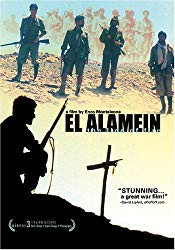

#9795 El Alamein 1942 - Die Hölle des Wüstenkrieges
 
 IMDB-Wertung: 7.2 / 10
IMDB-Wertung: 7.2 / 10  Metascore: 0
Metascore: 0 
War seen through the eyes of Serra, a university student from Palermo who volunteers in 1942 to fight in Africa. He is assigned to the Pavia Division on the southern line in Egypt. Rommel and the Axis forces are bogged down; it's October, the British prepare an offensive. At first, boredom, heat, hunger, and thirst bedevil the Italians; then the Brits attack, and there's no luck or heroism in death. Finally, it's retreat in confusion. Serra, his sergeant Rizzo, and his lieutenant Fiori take a last walk toward home. It's said that each soldier gets three miracles; when Serra's are used up, what then?
Jahr: 2002
Dauer: 113 Minuten
FSK:
Land: Italien Studio: Kurt MediaTonspuren:
Untertitel:
Auflösung: 1080p (1920x816) Größe: 8130 MB
Genre: Drama, Krieg
Regisseur: Enzo Monteleone
Drehbuch: Enzo Monteleone
Soundtrack: Aldo De Scalzi, Pivio
Darsteller:
 Pierfrancesco Favino als Sgt. Rizzo
Pierfrancesco Favino als Sgt. Rizzo- Emilio Solfrizzi als Lt. Fiore
- Thomas Trabacchi als Capt. De Vita
- Piero Maggiò als Tarozzi
- Giuseppe Cederna als Capt. Medician
- Roberto Citran als The Colonel
- Silvio Orlando als The General
- Lorenzo Balducci als Soldato Trincea
- Bruno Andrea Savelli als
- Simone Spinazze als Injured Soldier's Driver
- Paolo Briguglia als Pvt. Serra
- Luciano Scarpa als Spagna
- Sergio Albelli als Lt. Sforza
- Antonio Petrocelli als
- Matteo Albano als Carabiniere Avamposto Munizionamento
- Massimiliano Cutrera als
- Fabio Ferri als
Datei: X:\2002\El Alamein 1942 - Die Hölle des Wüstenkrieges (2002, FSK, 1920x816).mkv seit 28.10.2018
Festplatte: HD 1996-2002
 Es gibt insgesamt 93 Filme in der Gruppe '2002'
Es gibt insgesamt 93 Filme in der Gruppe '2002'